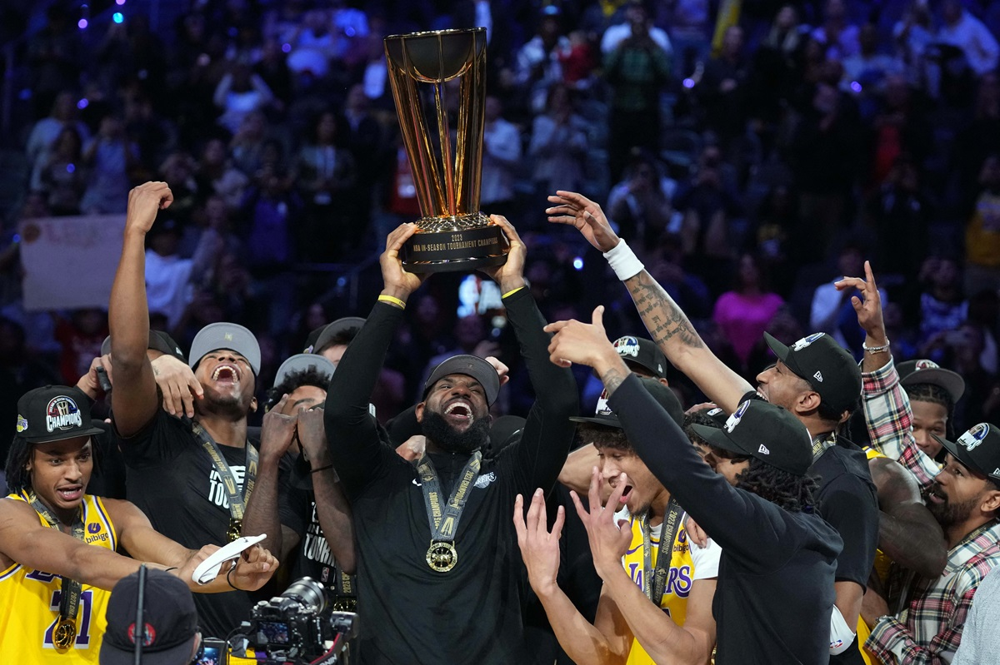

4 Desember 2023
Persatuan Olahraga Biliar Seluruh Indonesia (POBSI) akan menggelar turnamen bertaraf internasional di Indonesia, yakni Indonesia International Open 2024. Turnamen biliar tersebut akan berlangsung dari 21 hingga 25 Januari 2024. Acara ini akan dihelat di hotel Park Hyatt Jakarta. Sebagai informasi, Indonesia International Open 2024 merupakan pertama kalinya digelar di Tanah Air dan akan berkompetisi dengan berbagai negara mancanegara. Gelaran turnamen ini sebagai tanda apresiasi bagi atlet Indonesia yang sudah berprestasi dari luar negeri. Turnamen ini memiliki total hadiah sebesar 100.000 dollar AS atau setara Rp 1,5 miliar. Terdapat dua stage yang akan dipertandingkan pada perhelatan turnamen biliar tahun mendatang. Pertama, yaitu stage satu yang berlangsung dari 16-19 Januari 2024, menjadi babak kualifikasi, memperebutkan 16 slot di event utama. Sementara itu, stage kedua yang dihelat dari 21-25 Januari 2024 merupakan acara utama dari Indonesia International Open 2024. Menyambut acara ini, POBSI menyediakan 16 spot bagi atlet potensial nasional dan internasional melalui kualifikasi. POBSI berencana mengundang 128 atlet kategori dewasa dan 24 atlet dalam kategori usia 17, hal ini guna memastikan persaingan yang sengit dan beragam. Ketua POBSI, Hary Tanoesoedibjo, mengatakan bahwa di Indonesia harus banyak kompetisi biliar. Dia pun menilai bahwa kompetisi yang digelar guna meningkatkan kepercayaan diri dari atlet. "Untuk pertama kalinya Indonesia menyelenggarakan turnamen Biliar berkelas Internasional, ada 152 atlet dari berbagai dunia seperti dari Asia, Eropa, dan Afrika. Harapan kami turnamen ini berjalan lancar dan sukses karena biliar perlu kita angkat dan semakin berkembang, apalagi mendapat dukungan banyak pihak seperti dari Kemenpora." "Agar Biliar banyak peminatnya dan juga berprestasi, harus banyak kompetisi, karena dengan itu atlet akan banyak latihan. Kemudian perlu ada bantuan media supaya masyarakat bisa menonton dan juga minat semakin meningkat terhadap biliar." "Perlunya banyak kompetisi lokal dan juga level Internasional baik persahabatan maupun profesional agar atlet terbiasa berkompetisi dan semakin percaya diri, harapannya nanti bisa membawa nama baik Indonesia di mata internasional," kata Hary Tanoesoedibjo
Baca Selengkapnya